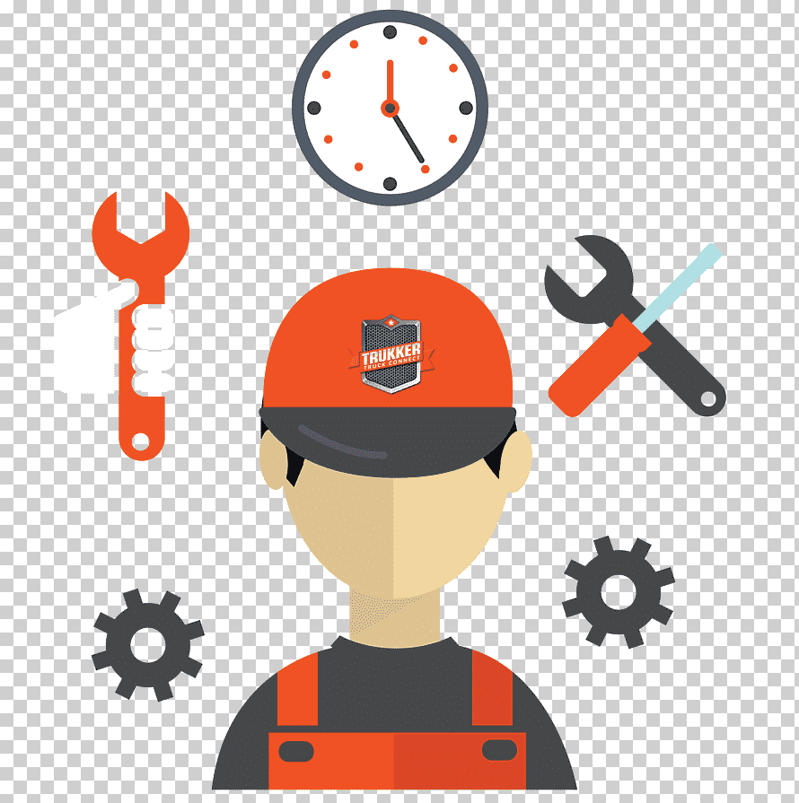

Guia Sobre el Mantenimiento Preventivo
Pasos para realizar un Mantenimiento Preventivo de forma efectiva
No hay un único plan ideal que pueda generalizarse a todas las industrias ni a las compañías de servicio técnico que les prestan servicio. No hay una fórmula mágica. Por ello, es fundamental que cada empresa estudie sus características, necesidades y mantenga el plan vivo, introduciendo los cambios que puedan mejorar su planificación. Pero sí hay algunas pautas que ha de seguir el diseño del plan:
1.- Definir objetivos
Definir qué hay que hacer, en función de las necesidades y características de la empresa. Además, para comprobar si se han cumplido, es importante establecer una serie de KPIs o indicadores que permitan tomar decisiones estratégicas.
2.- Identificar los activos susceptibles de mantenimiento
Es imprescindible contar con un inventario correcto y actualizado de todo el equipamiento que ha de contemplar el plan, acompañado de datos como su tiempo de uso, su función, información el fabricante, manual de uso o tipo de repuestos y consumibles que lleva asociados.
3. Determinar un presupuesto
De ello dependerá la envergadura del plan. Aunque también hay que reservar una partida para resolver averías, lo ideal es que esta tan solo conlleve el 20 % del presupuesto y el resto se destine a la prevención.
4. Asignar el equipo responsable del mantenimiento
Sean operarios internos o empresas externas, es importante tener claro quién se encarga de cada una de las tareas dentro del mantenimiento preventivo. Contar con un software de gestión de servicios de campo, como el que ofrece Praxedo, permite, por ejemplo, que cada equipo humano tenga asociadas tareas relativas a los equipos que se encuentran a su cargo, basándose en sus especialidades o distintas capacitaciones.
5. Definir y planificar las tareas necesarias
¿Qué acciones es necesario realizar? ¿Con qué periodicidad? Hay que tener en cuenta si las tareas implicarán una parada de la maquinaria o si los consumibles o repuestos están disponibles o es necesario pedirlos previamente, así como si son tareas rutinarias o diarias o que han de hacerse con determinada periodicidad, por ejemplo, una vez al año.
6. Contemplar la normativa y las recomendaciones técnicas
Hay órdenes de trabajo que han de ser ejecutadas para cumplir con determinadas regulaciones y otras para seguir las pautas del fabricante para un funcionamiento adecuado. El plan ha de incluir todas ellas.
7. Establecr un cronograma de las tareas
Automatizar los procedimientos relacionados con el mantenimiento preventivo es clave para garantizar el cumplimiento del plan, de los plazos y optimizar los equipos técnicos. En este sentido, es importante contar con un software que ayude a la digitalización y la automatización de la asignación de tareas.
8.- Ejecutar lo planificado
Para que el mantenimiento sea el correcto es imprescindible cumplir con los plazos definidos. Un software CMMS o GMAO ayudará a que las órdenes de trabajo se realicen en el tiempo adecuado, gracias a que permiten crear alertas automáticas.
9.- Documentar las tareas de mantenimiento
Cada una de las órdenes de trabajo están, como hemos visto, incluidas dentro de un plan amplio, que conlleva una continuidad en las tareas y unos plazos. Por ello, cualquier acción que se realice ha de ser documentada mediante partes de trabajo que prueben que el trabajo se ha realizado.
10.- Analizar el plan
Los objetivos y KPIs definidos en un primer momento permitirán comprobar si el plan de mantenimiento es adecuado y si se ha realizado correctamente. Por ello, tras las órdenes de trabajo, ha de analizarse la documentación para tomar las mejores decisiones para el negocio. Diseñar, ejecutar y evaluar correctamente un plan de mantenimiento preventivo es imprescindible para prever acciones a realizar en el sector industrial, energético o de la construcción. Solo así se garantiza aumentar la eficiencia productiva, sin paradas en la actividad y sin riesgos para el negocio.